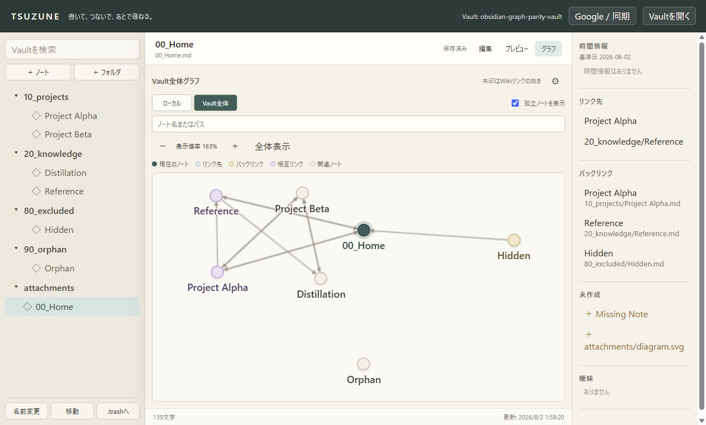

Graph Explorer GP2-2 — Circular Nodes & Fit
Vault内の全Markdownを円形ノードとして描画し、Wikiリンクを円周間へ接続。表示中グラフを実寸で画面内へ収めた。
224 tests PASS
7 / 7 Markdown nodes
Markdown unchanged
実Electron画面

実装した契約
| 項目 | 結果 |
|---|---|
| ノート形状 | 14 × 14px、border-radius 50%の円形marker |
| 接続線 | 単一Canvas上で円周から円周へ描画 |
| Vault全体 | 孤立ノートを含む7 / 7 Markdownを表示 |
| 全体表示 | ノードとラベルの実寸境界からzoom / panを算出 |
| 操作性 | DOM button、pointer、keyboard、screen reader向け名前を維持 |
検証結果
| 項目 | 結果 |
|---|---|
| TypeScript | PASS |
| 全自動テスト | 31 files / 224 tests PASS |
| MCP smoke | 4 read / 3 write tools PASS |
| Production build | PASS |
| 実Electron capture | 7 circular nodes / 11 edges PASS |
| Markdown invariant | 7 files、SHA-256 54B472FF…BC59B 前後一致 |
次の1 slice
GP2-3ではText fade thresholdだけを追加する。円と接続線は常に残し、密集時のラベルだけを段階的に薄くして可読性を上げる。Node size、Link thickness、Groups、Filtersは別sliceに分ける。